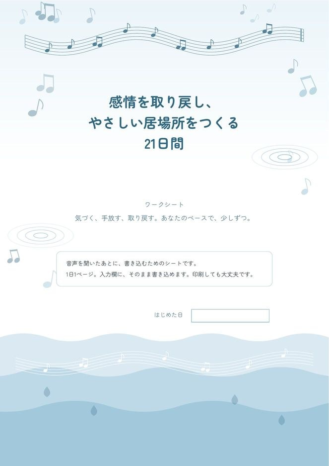

1日5分、声を聞いて、ひとこと書く。
気づく、手放す、取り戻す。

21日間をはじめる2,980円（税込）・音声25本とワークシート、特典7つお申し込みのあと、すぐに受け取りのご案内が届きます。
つらい気持ちが長く続くと
心は、感じ方をそっと弱めて
自分を守ろうとすることがあります。
だから、無理に感じようとしなくて大丈夫。
安心が、少しずつ戻ってくると
感情も、少しずつ戻ってきます。
書くなんて
それだけで、何か変わるの？
そう思う方も、多いと思います。
でも、心理学の研究では
書くことについて
思った以上のことが、報告されています。
つらかった出来事への気持ちを
1日15分ほど、4日間書いた学生たちは
そのあとの数か月
診療所に行く回数が少なかった、と報告されています。
気持ちを外に出すことは
心だけでなく、体にもつながっているのかもしれません。
Pennebaker & Beall, 1986 ／ Pennebaker, 1997（Psychological Science）
「さみしい」「くやしい」と
気持ちに言葉をつけると
心の反応が、落ち着きやすいことがわかっています。
もやもやは、名前がつくと
手のひらに乗るくらいの大きさになります。
Lieberman et al., 2007（Psychological Science）
感謝できることを、短く書いていった人は
前向きな気持ちが、高まりやすかったと報告されています。
大きな出来事でなくて、大丈夫。
温かいお茶、晴れた空。
それで十分です。
Emmons & McCullough, 2003（Journal of Personality and Social Psychology）
前もって、行動を書いて決めておくと
実際に動きやすくなると
たくさんの研究で報告されています。
休んだあとも戻ってこられるように
この21日間にも、この仕組みを入れています。
Gollwitzer & Sheeran, 2006（Advances in Experimental Social Psychology）
「なりたい自分」を書いた人は
気分が良くなりやすかった、という研究もあります。
21日目に、未来の自分へ手紙を書くのは
そのためです。
King, 2001（Personality and Social Psychology Bulletin）
この21日間で書くのは
毎日、ひとことだけ。
つらい出来事を
深く書く必要はありません。
頭の中でぐるぐるしているものを
紙の上に、そっと置く。
それだけで
心に、少しすき間ができます。
効果の出方には、個人差があります。研究の紹介は、効果を約束するものではありません。
心の中を、水のようにしずかに見つめる週
抱えすぎたものを、風にあずけるように少しずつおろす週
好きや、心地よさを、もう一度あたためる週
21日間と聞くと
長く感じるかもしれません。
でも、続けることが苦手な方ほど
続けやすいように、つくりました。
全部できなくても、大丈夫です。
ひとつでも
「これは続けたい」と思えたら
それがあなたの
やさしい居場所の入口です。
わたしも、HSP気質の当事者です。
30年ほど、感情があまり動かない時期がありました。
心も体も動かなくなって、休んだ時期もあります。
いちばん苦しかった時に、支えてくれたのは
大きな言葉ではなく、小さな「好き」でした。
優しい音に、少しだけ耳を向けてみたことが
変わるきっかけでした。
誰かの力になりたい。
でも、それ以上に、自分を幸せにしたい。
そう思えるようになった今
同じように苦しんできた方が
少しでも楽に生きられるお手伝いをしたくて
この21日間をつくりました。
Xでは「もの ｜ 優しい世界を届ける」として、毎日、言葉を届けています。
この21日間は、セルフケアのための音声とワークです。
診断や治療の代わりではありません。
2,980円（税込）
音声25本、ワークシート52ページとNotion版、特典7つ
21日間をはじめるカードで、すぐにお申し込みできますお申し込みのあと
受け取りのご案内（Notionのページ）が届きます。
見送ることも、大切な選択です。
LINEでは、これまでどおり
言葉と声を届けます。